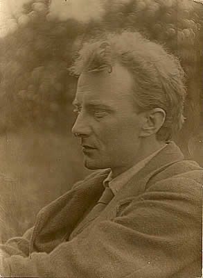

A la Poursuite du Printemps
Traduction française de
In Pursuit of Spring
by Edward Thomas

Source : Edward Thomas Fellowship
|
Sommaire
I. Accueil III. Sommaire IV. Chapitre 1 - A la Recherche du Printemps |
Website © Copyright - ef. The Other Man.
culture-Logic editor culture as a data